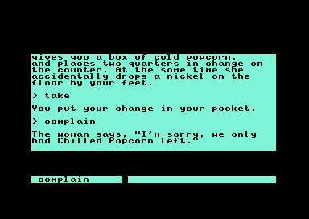
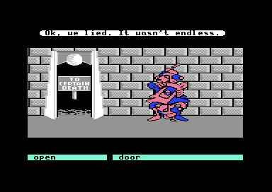
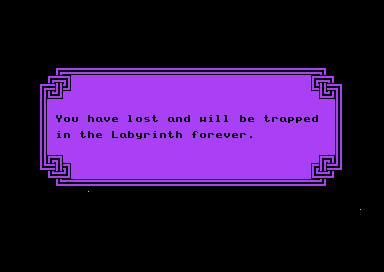

01 · The opening and the maze
Secret: the nickel you pocket follows you into the maze
At the popcorn stand in the city, the woman takes your two dollars and drops a nickel by your feet. You can pick it up "without the woman noticing you", or hand it back, and she thanks you: "You can't imagine what the boss would do to me if my money came up short." Picking it up stores 1 in the saved-state byte $0575, and handing it back stores $FF. Nothing clears that byte until a new game starts, and two later scenes read it.
In the theater, when you offer your popcorn to the teenager, the code at $9485 tests it. If you kept the nickel he "grabs the entire box of popcorn and finishes it off in a few big bites". Otherwise he "takes a handful of popcorn and then thanks you."
Deep in the maze, the Wise Man's hat asks for payment before he gives advice. If you kept the nickel, a gift when you owe nothing is taken anyway with "Thanks, you get what you give." ($9023). Pay with a dollar and he gives four quarters in change, less what you owe, and one fewer again if you kept the nickel ($906E).
The three outcomes are ports of $9485, $9023 and $906E; test_nickel.js runs the game's own code at $9023 and $906E for every value of $0575 and every debt from 0 to 3, and test_workflow.js runs $9485. The pick-up and the hand-back were played in the emulator; the theater offer and the Wise Man were checked in the code only.
02 · The popcorn stand
Secret: the popcorn costs $1.25 only if you complain twice
The menu at $A03D asks $1.25. The woman takes two dollars and leaves two quarters on the counter, so the box costs $1.50. The first complaint gets "I'm sorry, we only had Chilled Popcorn left." The second gets "I'm sorry, here's your other quarter.", and only then is the price the one on the menu. A third complaint gets "You sure complain a lot." and nothing else. The complaint counter is $968C, and the quarters waiting on the counter are $968D. Both orders, collecting the change first or complaining first, were played in the emulator and end with three quarters.

The popcorn stand. From the supplied disk.
03 · Alph and Ralph
Secret: one of the guards' doors is a pit, and the game picks which
When the guards' room loads, its setup code stores a random bit at $8F06. With the bit at 1 the left doorway leads on to the Wall of Hands and the right one drops you down a shaft, with "Ok, we lied. It wasn't endless." and the end of the game. Both doorways were walked through in the emulator with the bit at 1. With the bit at 0 the code takes the other branch of the same test; that case has not been walked through.

Through the wrong door. From the supplied disk.

The end of the game a moment later. From the supplied disk.
The Areas tab steps through the whole exchange with the guards.
04 · The castle
Bug: the nerd says his first line twice when he starts over
In the castle a nerd talks at you in 22 lines, from "You know it's really amazing how" to "I'll start over from the beginning!". The routine at $9902 keeps the number of the next line in $98C4. Each turn it takes that number, adds one to the stored count and shows the line. When the number it took is already past the last line, it shows line 0 and sets the count to 0 instead. After line 21 the count is 22, so the next turn shows line 0 and leaves the count at 0, and the turn after takes 0 again and shows line 0 a second time.
The stepper follows the instructions at $990C-$9922. The lines are decoded from the scene's tables at $9955 and $996B.
05 · The Wise Man's Garden
Bug: a walk round the ring that starts at cell 7 loses its first step
Ask the Wise Man for advice and he chooses one of eight puzzles at random, gives you a hint, and puts you in his debt. One of them, "Thoroughness is a virtue, but order is paramount.", asks you to walk round the nine cells of the garden in one direction. The code at $919D decides the direction from your first two cells. It tests "new cell plus one is the old cell" and "new cell minus one is the old cell", wrapping 8 to 0 and 0 to 8. For a new cell of 8 the second test goes wrong: the plus one has already wrapped 8 to 0, the minus two takes that to $FE, and the wrap then puts 8 back, so the code compares the old cell with 8 instead of 7. A walk upward from 7 to 8 matches neither test, and the puzzle starts again from cell 8. The walk still works; it just takes one cell more.
new cell 8: 8 + 1 = 9, wraps to 0 0 ≠ 7
0 - 2 = $FE, wraps to 8 8 ≠ 7 → start again at 8
06 · Still open
Questions the code leaves open
- How fast the thirteen-hour clock runs on its own while you play.
- Whether you can ever hold ten of one item. A count is stored as one less than the number held, and the display at
$6031 adds $31, the character 1, to it. Ten would show as "(:)".
- Whether opening the guarded door in the Stone Corridor is remembered. Its code sets the scene number to 4 before it changes the map, and the routine that records map changes,
$58C8, skips scene 4. Opening that door has not been seen in play.